An AI-powered credit card optimization app that recommends the best card for every purchase, tracks statement credits and annual perks, and manages your entire wallet. Available on the web and as a native iOS app.
Visit Cardzen
Creator, Full-Stack Developer, AI Developer
Evan Eckels
December 2024 - Present
Frontend: React, TypeScript, Vite, Tailwind CSS, Radix UI
Mobile: Capacitor (native iOS), PWA
Backend: Node.js, Express, LangGraph
AI: Gemini 3.1 Flash Lite, OpenAI embeddings, LangSmith
Data: Firebase Firestore, Firebase Auth
Payments: Stripe, RevenueCat (Apple IAP)
Deployment: Vercel (web), Render (API)
I have way too many credit cards. Each one has its own rewards structure, bonus categories, statement credits, and annual perks. Keeping track of which card to use for groceries versus gas versus dining out, remembering to activate quarterly categories, and making sure I actually use all those annual credits before they expire. It honestly felt like a part-time job.
Most people leave money on the table every year because it is just too much to keep in your head. The average rewards card holder forfeits $120 or more in unused credits annually. I tried spreadsheets for a while, but they cannot keep up with rotating categories, and they definitely cannot tell you which card to pull out when you are standing in the grocery store checkout line. I wanted to build something that could actually reason about your whole wallet, and that meant building an AI system, not just a lookup table.
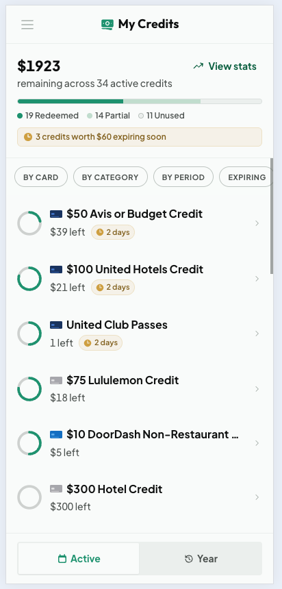
My Credits, tracking $1923 across 34 active credits with the most urgent ones first
I started with a single AI agent that handled everything: spend recommendations, credit tracking, card management, all of it. It did not work well. The agent tried to do too many things at once and gave unfocused answers. If you asked about your best dining card, it would also pull in credit info and stats you never asked for. So I split it up.
My first split went too far. I built a six-agent orchestrated graph with separate agents for spend, credits, cards, stats, actions, and chat, plus a composer node to merge their outputs. It worked, but it was over-engineered. Every query paid the cost of routing and composition, latency suffered, and most of those specialized agents overlapped so much that the boundaries between them were arbitrary. The lesson was that more agents is not the same as better answers.
Cardzen now runs a leaner LangGraph design that is both faster and easier to reason about. One compiled graph, five nodes, three agents:
A Router node classifies intent up front, and a Composer node merges results only when a query genuinely spans more than one agent, like "what is my best dining card and do I have any credits expiring?" For the common case of a single-agent query, the Composer returns the answer verbatim with no extra LLM call. The old spend, credit, card, and stats agents did not disappear; they were absorbed into the Advisor, which is the part of this rebuild I am most happy with.
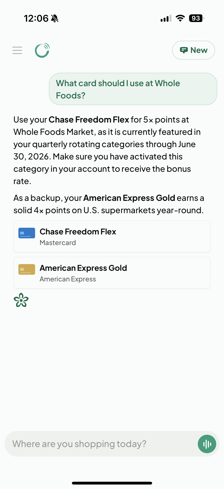
The Advisor recommending a card, with the reasoning and a backup option
So how does the system figure out which agent should handle your question? If a query lands on the wrong agent, the answer is useless. I needed routing that was both fast and accurate, so I built it in three layers that escalate only when they have to.
Generic app questions like "how do I add a card?" are caught first by a regex and in-memory scoring pass against the help content. These never need an embedding or an LLM call. They go straight to the Chat agent with the right help article attached.
For everything else, I embed the message with OpenAI's text-embedding-3-small model and compare it against a bank of example questions for each agent using cosine similarity. The example embeddings are precomputed at startup, so this runs in well under 100ms. If the top match clears the confidence threshold, the query routes directly with no LLM call. Roughly 80% of queries resolve here, which keeps the app feeling instant.
The remaining 20% are the genuinely ambiguous or compound queries, the cases where two agents both look like a good fit. Only then does a Gemini call step in to make the final call and, when needed, fan the query out to more than one agent. Most users get sub-100ms routing while the hard cases still land in the right place. Routing also tags each query with a domain (spend, credit, card, stats, snapshot, or mixed), which is what tells the Advisor exactly which tools to load.
The agents need to actually do things, not just talk. When you ask Cardzen to mark a credit as used or tell you your ROI, it is calling real tools that read and write your data. I built roughly 25 structured tools, each validated with a Zod schema, and organized them by domain:
One thing I learned early is that handing an agent every tool makes it unfocused, the same failure as the single-agent problem but one level down. So the Advisor only ever sees the tools for the current query domain. A spend question gets zero tools because the Advisor can reason directly from your preloaded wallet data; a credit question gets the four credit-read tools; a stats question gets all seven stats tools. The Chat agent only ever carries the two catalog tools it needs.
Write tools are Pro-only, and I enforce that in three independent layers rather than trusting one check. The router refuses to send a free user's request to the Action agent, the Action agent registers no write tools for a free user in the first place, and each write tool short-circuits on its own if it is somehow reached without Pro. It is defense in depth, so a single missed check cannot let a free account write data. But all of these tools are only as good as the card data behind them, and keeping that data accurate is its own challenge.
So where does all this card data actually come from? There are hundreds of credit cards on the market, each with dozens of fields like reward rates, annual fees, statement credits, rotating categories, and sign-up bonuses. And issuers change things constantly. If the system tells you the Amex Gold earns 4x on dining but Amex quietly moved that benefit, you are getting bad advice and you do not even know it. Garbage in, garbage out. I needed a dedicated admin tool for managing card data end to end, so I built Card Manager, a separate React and Express app that talks to the same database.
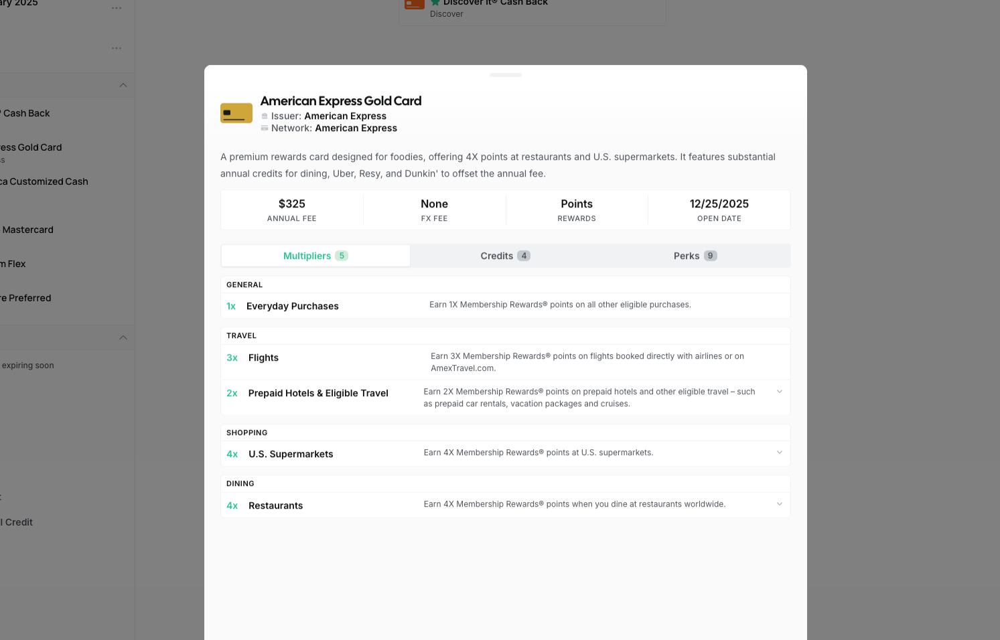
Card Manager, the admin app for editing card details, multipliers, credits, and perks
I was spending hours manually entering card data: copying reward rates from issuer websites, cross-referencing benefits pages, typing out credit details field by field. It did not scale. So I built an extraction pipeline where I paste raw marketing copy from a card issuer's website and Gemini extracts structured data across five data types (card details, credits, perks, multipliers, and rotating categories). What used to take 30 minutes per card now takes about 30 seconds.
Getting clean data out of an LLM is harder than it sounds. Model output is messy: malformed JSON, trailing commas, markdown wrappers, you name it. I built a six-step JSON parsing fallback chain that handles progressively worse output formats. The extraction rules themselves are loaded from markdown files that teach the model what to look for per data type, which means I can tune extraction behavior without touching code. There is also a refinement loop so I can iterate on the output before committing it.
Extracting data once is not enough. I needed to know when reality drifted from what the database said. So I built an AI comparison system that diffs stored records against fresh content from issuer websites and flags mismatches, missing items, and outdated info for me to review before any of it hits production. When benefits do change, the system writes a new version with effective date ranges rather than overwriting the old record. That way, queries about a past card configuration still return accurate results.
Every schema is validated with Zod, from card details down to individual rotating category periods. This is how roughly 25 tools across three agents can all trust the data they read. It was extracted by AI, validated by schema, and version-controlled with date ranges before any agent ever touches it.
I wanted the chat to feel responsive and transparent. Responses stream token by token over Server-Sent Events, and a live timeline shows which LangGraph node is currently executing. You can watch your query route to an agent and follow the tool calls as they happen, which makes the AI feel less like a black box. Each node is also wrapped in a circuit breaker, a timeout, and retries, so a single slow tool call cannot hang the whole response. Chat history is persisted, so you can pick up previous conversations where you left off.
One thing I focused on was making the AI responses actionable, not just informational. When Cardzen recommends a card or surfaces an expiring credit, it does not just describe it. It renders interactive component blocks inline:
The chat does not just give you information, it can execute actions too. Tell it you used a credit and it updates your records on the spot, then renders a confirmation card showing exactly what changed.
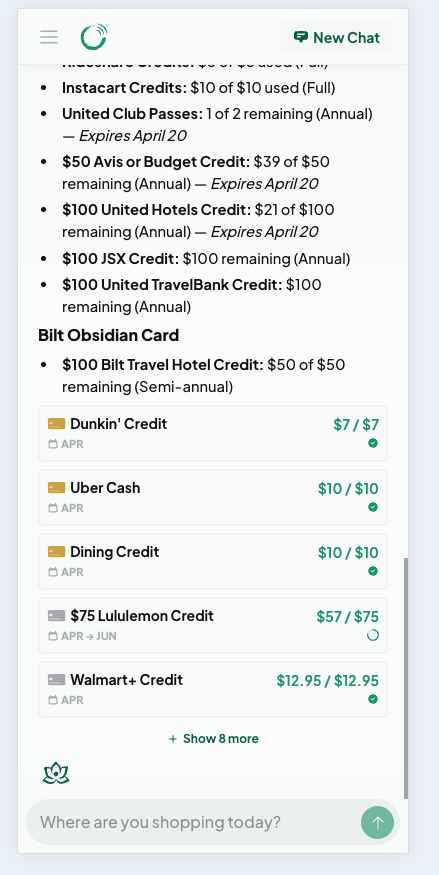
Inline credit chips rendered in a chat response
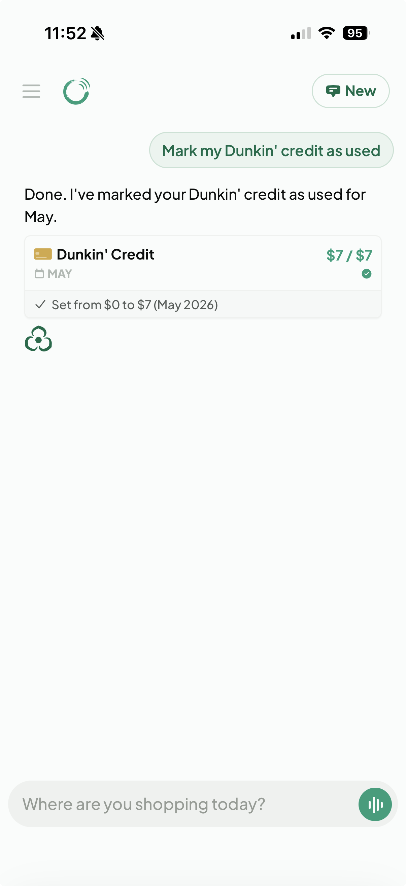
Marking a credit as used directly from chat
This is the feature that makes you actually open the app. The problem it solves is simple: you forget. You forget about that Amex dining credit, you forget that a certificate expires next week, you forget that you never used your TSA PreCheck reimbursement. So every morning, Cardzen generates a personalized briefing called Daily Zen that appears when you start a new chat. A selector picks the most relevant sections for the day from a catalog of twelve, anchored by two that always matter:
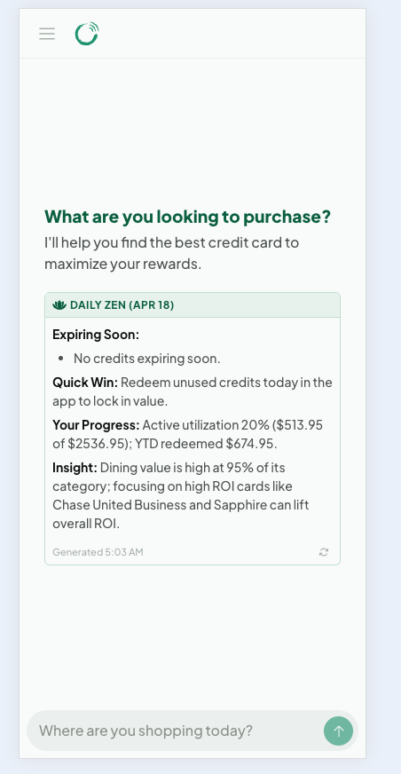
Daily Zen, the AI briefing that greets you when you open the app
It is generated by Gemini, and a layered validator checks every briefing for length, formatting, and leaked instructions before it is shown. If the validator rejects the output twice, an escape valve drops any custom user instructions on the third try, so an adversarial preference cannot poison every retry. A scheduled job warms the briefing for all Pro users at 5 AM Eastern, so your first app open of the day hits a cached, ready summary instead of waiting on a model. The goal is simple: open the app and immediately know if there is something you should act on today.
Chat is the front door, but Cardzen is also a full wallet manager you can browse directly. Two surfaces do most of the work.
My Cards gives each card its own page with the annual fee, reward currency, foreign transaction fee, and the date you opened it, plus tabs for its multipliers, credits, and perks. Every multiplier, credit, and perk can be toggled on or off, so the AI only ever recommends and counts the benefits you actually use. If you never touch a card's prepaid-hotel multiplier, hide it, and it stops skewing your recommendations.
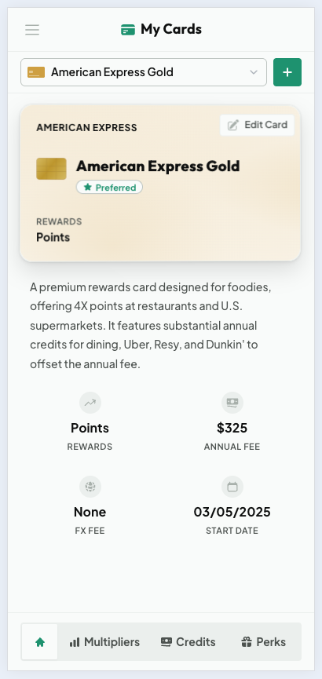
A card overview with fees, rewards, and key dates
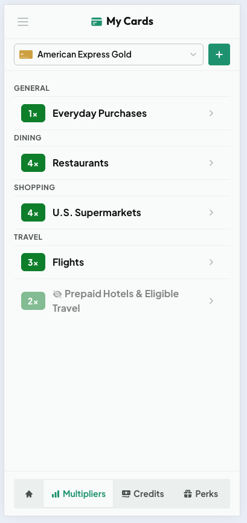
Per-category earn rates, each one toggleable
My Credits has two modes. The Active view lists everything usable right now, sorted by urgency with clear expiring-soon warnings. The Year view rolls credits up per card with a utilization percentage, which is exactly the number you want when deciding whether a card is worth its annual fee. Tapping any credit opens a detail sheet with a usage slider and per-period status. That manual tracking exists for a real reason: banks do not report statement credit usage through any API, so the only reliable record is the one you keep, and Cardzen makes keeping it a single drag.
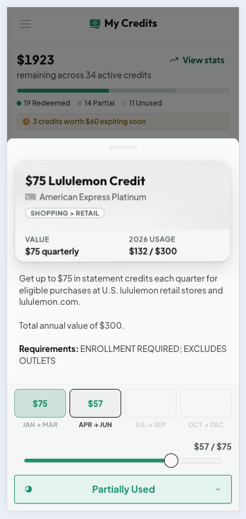
A credit detail sheet with quarter history and a usage slider
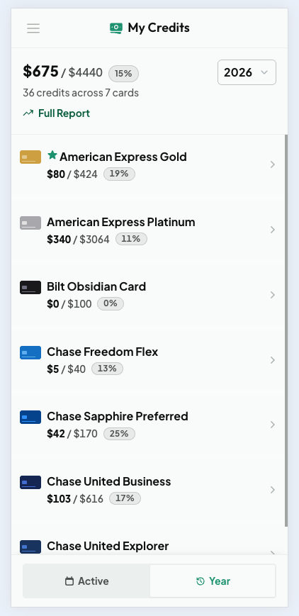
The Year view, utilization per card for renewal decisions
The whole point of Cardzen is to have the right answer when you are standing at the register, so it had to be excellent on a phone. The same React codebase ships three ways: a web app, an installable progressive web app, and a native iOS app built with Capacitor. Two build paths share almost all of their code. The web build includes a service worker and runtime caching; the native build tree-shakes that out and syncs into Xcode, gated by a single compile-time flag.
The native shell is where the more interesting engineering lives. I wrote a custom Swift text-to-speech plugin so the assistant can read responses aloud. It owns the speech synthesizer's lifetime and pre-primes the system speech daemon at launch to kill the delay on the first word, with a safety timeout so a stuck utterance can never freeze playback. A second custom plugin wires up MapKit so the "near me" chat flow can find nearby places. On top of that there is offline handling, a strict Content-Security-Policy with no inline scripts, and a startup cover that bridges the native launch screen to the first React paint so there is never a white flash.
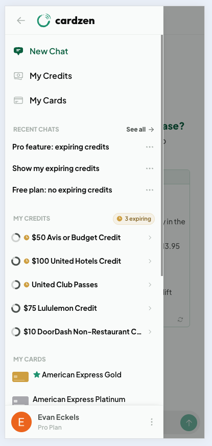
The mobile navigation drawer, the densest surface in the app
Cardzen is free to start. On the free plan you can add unlimited cards, browse the full catalog, see your whole wallet, and ask the assistant for recommendations. Pro, at $3 a month or $24 a year, unlocks the parts that turn it from a reference into a habit: credit tracking, AI write-actions in chat, the Daily Zen briefing, wallet analytics, full credit history, and natural voice playback.
Billing runs on two rails because the app does. On the web, payments go through Stripe. On iOS, they go through Apple in-app purchases via RevenueCat, and the native build hides the web payment options entirely to stay within Apple's rules. A shared resolver understands both rails plus private invite grants, so a user's Pro status is consistent no matter where they subscribed. Downgrades are non-destructive: your tracking history is preserved and your numbers reappear instantly the moment you re-upgrade.
If the AI tells you to use the wrong card for a purchase, or says a credit has expired when it has not, that erodes trust immediately. So how do I know the system is actually giving good answers? I set up a LangSmith evaluation pipeline with both code-based and LLM-based evaluators.
These check objective things: does the response contain the expected content, is it an appropriate length, does it include the right component blocks? They are fast and deterministic, which makes them cheap to run on every change.
These score responses on relevance, accuracy, helpfulness, and clarity on a 0 to 1 scale. I also built dedicated safety and correctness judges that specifically flag hallucinated card benefits or incorrect reward rates. That kind of mistake is the worst thing this system can do, so it gets its own check.
I track response latency against tiered thresholds: excellent under 500ms, good under 2s, acceptable under 5s. All evals run against curated datasets with fixture data, so results are reproducible and I can catch regressions quickly.
Cardzen is live on the web and on the iOS App Store, mobile-first by design because the whole product is built around that moment at the checkout line. I am actively shipping improvements to the agent pipeline, expanding the card catalog, and growing the eval suite. The goal is to make credit card optimization effortless for everyone, not just the rewards enthusiasts who spend hours on forums and spreadsheets. Next up, more cards, more AI-powered features, and continuing to make the right answer feel like it was there all along.